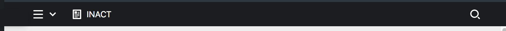
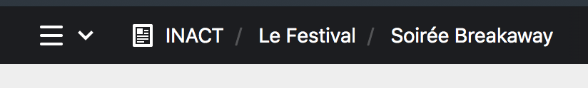
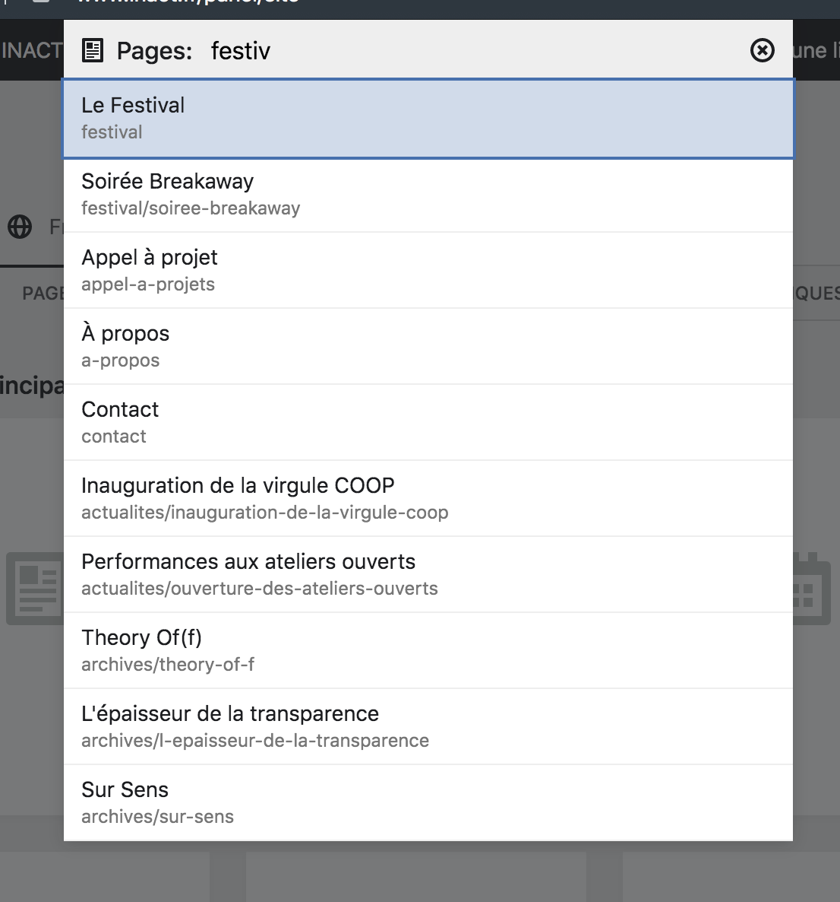

Interface du Panel #
En elle-même, l’interface est assez intuitive. Elle ressemble à tout autre logiciel d’édition de contenu que vous avez déjà pu recontrer.
Toutefois, la présente documentation fait régulièrement référence à quelques éléments important de son interface, aussi, il est important de les connaître et de savoir les utiliser.
Haut de page #
Header #
La barre d’en-tête noire, en haut du site internet, ou header, comporte des éléments de navigation importants du Panel.

Le header du Panel, à gauche, le hamburger qui donne accès au menu déroulant, au centre, le chemin d’arborescence et à droite, la loupe donnant accès à la recherche.
Hamburger & Menu déroulant #
À gauche de celle-ci, vous trouverez le bouton hamburger qui vous permet d’accéder au menu déroulant du site. Ce menu liste les sections principales :
| Bouton | Description |
|---|---|
Site |
Le contenu du site internet |
Utilisateurs |
Les comptes utilisateurs du site |
Paramètres |
Les paramètres du site internet |
Votre compte |
La page du compte utilisateur que vous employez actuellement |
Se déconnecter |
La possibilité de se déconnecter du Panel |
Fil d’Ariane (Breadcrumb) #
Au centre du header est affiché le Fil d’Ariane, c’est à dire la liste des pages parentes* à la page dans laquelle vous vous trouvez. Dit autrement, c’est le chemin des pages qui contiennent la page actuelle. Vous pouvez cliquer sur le nom d’une page pour vous y rendre.
Dans l’exemple suivant, on retrouve la racine du site, la page Le Festival et la Soirée Breakaway qui est une sous-page de la page Le Festival.

Recherche #
Le bouton en forme de loupe vous permet d’accéder à la recherche du Panel.
Grâce à elle, vous pouvez rechercher des pages précises grâce à une liste de mot clés. Ainsi, vous pouvez accéder plus rapidement à des sections importantes du site internet. Elle est très pratique pour trouver des pages profondément enfouies dans l’arborescence du site.
Une recherche sur festival donne une liste des pages ou ce mot est référencé.
